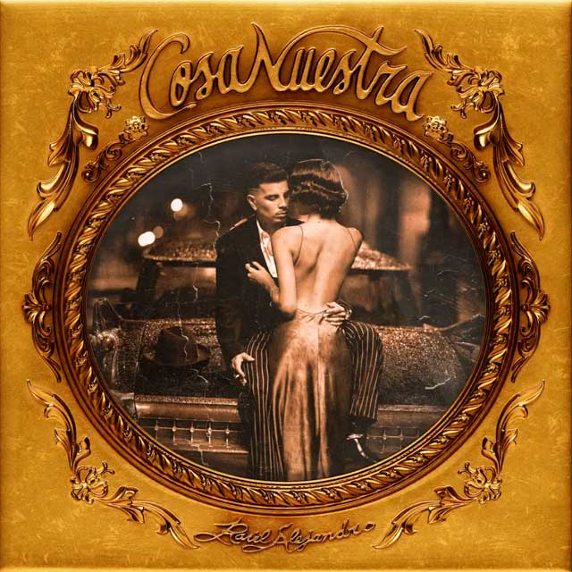

| Album Cosa Nuestra | |
|---|---|
|  | Descubre Cosa Nuestra de Rauw Alejandro Lanzado en 2024 Cosa Nuestra es el álbum que fusiona reguetón, salsa y ritmos urbanos con el estilo único de Rauw Alejandro. Con canciones llenas de pasión y colaboraciones destacadas, este disco rinde homenaje a la música latina mientras explora temas de amor y nostalgia. ¡Sumérgete en Cosa Nuestra y vive una experiencia sonora llena de energía y emoción! |